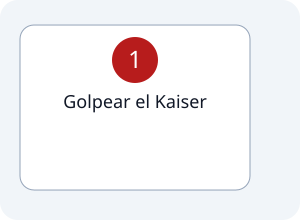

1
Estación #2
Entrada Forzada.
Recorrido de la estación

Pasos

Indicaciones
- * Los hombres deben desplazar el yunque 1 metro mediante golpes con la mandarria.
- * Las mujeres deben desplazar el yunque 50 cm mediante golpes con la mandarria.
- * Solo vale el golpe directo al yunque; si golpeas fuera del objetivo, hay penalización de 2 segundos.
- * Dejar la mandarria en la zona asignada al terminar la prueba; si no, penalización de 5 segundos.